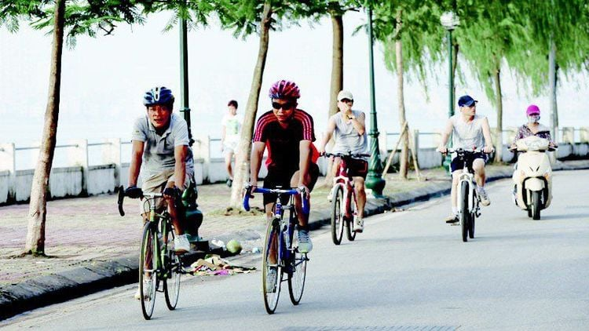
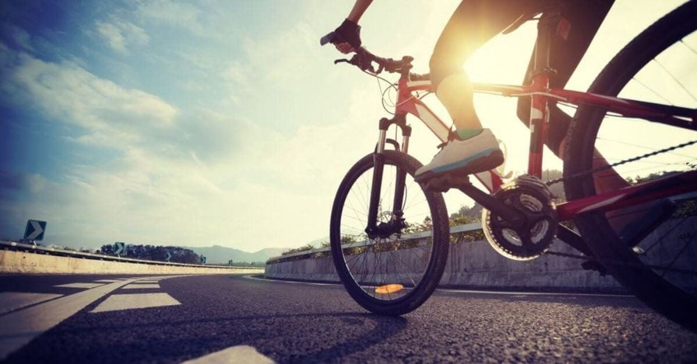

Event news Bicycle details
Cycling brings many benefits to our health. Cycling not only helps physically but also makes your spirit always refreshed, reduces anxiety and stress. 1. Cycling helps control weight
1. Cycling helps control weight
- When we have the habit of cycling every day, especially cycling at high intensity regularly, it will significantly reduce body fat, help you control your weight and have a healthy body. In addition, cycling also increases themetabolism of the body, builds muscle. Therefore, your body will burn morecaloriesmore during movement.
 2. Helps reduce impact on joints, reducing the risk of foot injuries- When you run, your leg joints have to bear the full weight of your body. Long-term impact can lead to injuries. Meanwhile, if youcycling, the body weight will now be borne by the quadriceps and hamstrings, the knee and ankle joints will have their pressure reduced significantly. Scientists around the world have conducted many studies to compare the risk of muscle damage between two groups of people who run and cycle regularly. They found that the group of runners had a 133–134% higher risk of muscle damage and 87% higher muscle soreness than cyclists.
3. The effects of cycling in improving mental health- A study by the YMCA (Young Men's Christian Association) found that people who lead active lives scored 32% higher on mental health scores than those who were not active. That proves that exercise boosts your mood. Here's how you releaseadrenalineandendorphinout of your body. Exercise also helps you become more confident when achieving new skills and goals. Cycling is a combination of outdoor exercise and exploring new areas. You can cycle alone to enjoy some private time, but you can also cycle with friends to expand your relationships and bond better with people who share the same interests.
 4. Cycling makes our lungs healthier- This may sound counterintuitive, since cycling involves breathing in fresh air and may expose you to more dust and smoke than other people. However, a recent study found that cyclists are actually exposed to less toxic fumes than people in cars. In a study by the Healthy Air Campaign, conducted by King's College London and Camden Council, cyclists, pedestrians, bus riders and drivers were equipped with air quality monitors and driven through London's busiest roads. The results showed that car drivers were exposed to five times more air pollution than cyclists, 3.5 times more than pedestrians and 2.5 times more than bus riders. So it can be seen that cycling is the least likely to expose us to air pollution.
You may be interested :
The importance of Cycling for health
 The importance of swimming for health
The importance of swimming for health
 Sports and Fitness Improve for health
Sports and Fitness Improve for health
 Benefits of Group Fitness
Benefits of Group Fitness
 Food benefits for health
Food benefits for health
 spas for health
spas for health

Latest Posts
The importance of Cycling for health
The importance of swimming for health
Sports and Fitness Improve for health
Benefits of Group Fitness
Food benefits for health
spas for health
Sign up for a quote
Please fill in all information and send it to us.
Your email will not be displayed publicly. Required fields are marked *
Comment *
Name *
Email *
Phone *